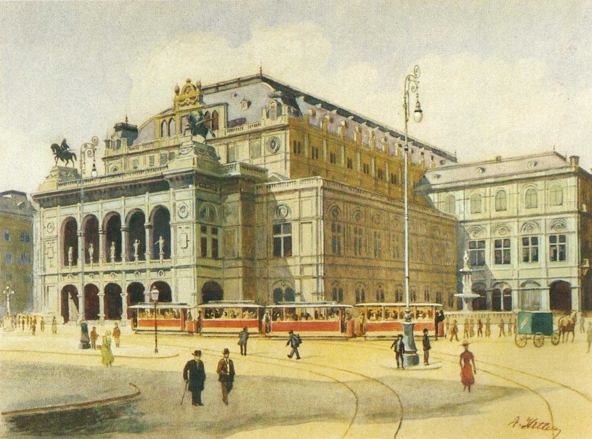

Published: March 18, 2025
For centuries, the question of whether we should separate art from the artist has sparked intense debate...
As Dr. Elizabeth Monroe, an art historian at the fictitious New York Institute of Aesthetic Studies, states:
Art, once created, belongs to the public consciousness. The artist may have given it life, but its meaning is shaped by those who engage with it.
“Vienna State Opera, painted by Hitler in 1912”
Many revered artists have had deeply troubling personal lives...